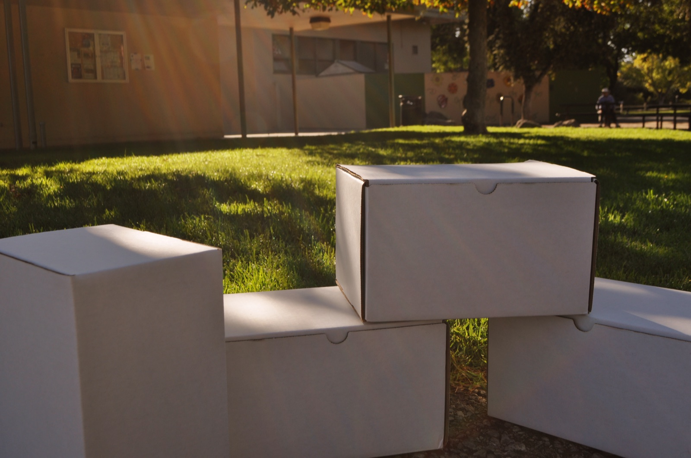

Comfort Boxes
Monthly boxes give participating students free products they choose for their needs, delivered through their school.
See the programSchool-based menstrual care
Pads for Peers helps students access free menstrual products through their schools, with privacy, choice, and dignity built into every step.

Our work in numbers
Our approach
Products, education, and school partnerships work together to make menstrual care easier to access.
Monthly boxes give participating students free products they choose for their needs, delivered through their school.
See the programWorkshops and resources support informed, open conversations among students, educators, and communities.
Explore the journalWe work with schools and community organizations to make support practical for staff and dependable for students.
Partner with usOur mission
Students who need period products should not have to rely on chance, ask around, or go without during the school day.
We make comfortable, good-quality menstrual products available to students who need them and help schools cultivate a supportive, open culture around periods.
Why our approach mattersJoin the effort
Support free, school-based menstrual care with a gift or a school partnership.